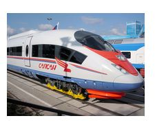

За рулем сижу довольный —
Ездить просто и легко!
Только руль чуть-чуть огромный
И педали далеко!

Мне купили паровозик,
Сразу два вогона возит
Я включу его, и он
За собой везет вагон
Вот бы мне в нем прокатиться,
Только жаль — не поместиться.
Нарисую я в альоме
Голубое море,
Белый парус над волною
Бьется на просторе